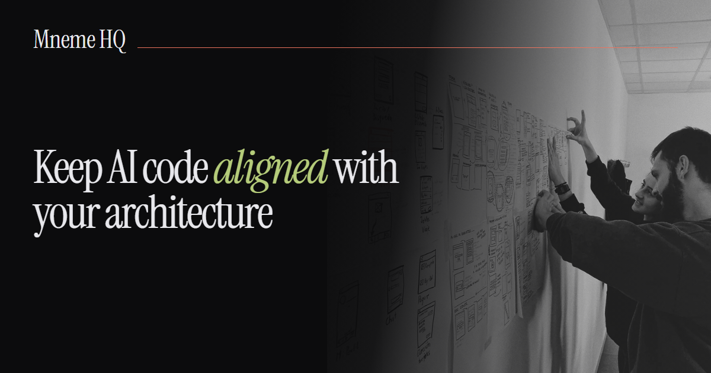

OG preview test
Temporary page. It exists so the new og-v2.png card system can be
validated against LinkedIn's renderers before the site-wide cutover. It is
noindex, nofollow and is absent from sitemap.xml.
The card advertised by this page is the Brand family card, carrying the four image metadata tags the cutover introduces.
